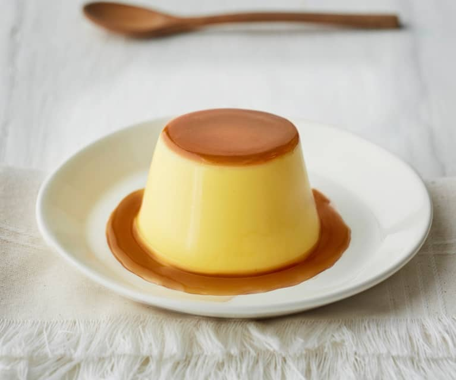

Creme Caramel

Intermediate Course:
Description
Creamy and delicate, crème caramel is a soft dessert loved all over the world for its simple goodness!
It has ancient origins and is very reminiscent of Mexican flan, with which it shares both the aromas and the bain-marie technique.
Similar in texture to an Italian panna cotta, crème caramel is actually made without the addition of gelatin or starches: the eggs will thicken the mixture themselves and, with gentle and careful cooking, will give you a perfect texture, smooth and compact, but at the same time enveloping and velvety.
Accompany crème caramel with whipped cream or fresh fruit, or just enjoy the way it melts in your mouth!
Ingredients
Ingredients for 6 molds (of 180 ml each)
- Whole milk 1 ¾ cup (450 g)
- Sugar ⅔ cup (120 g)
- Egg yolks 2 ½ tbsp (20 g) - (about 1 medium)
- Heavy cream ⅔ cup (150 g)
- Eggs 1 cup (220 g) - (about 4 medium)
- Vanilla bean 1
For the caramel
Steps
- To make crème caramel, first prepare the caramel: pour the sugar into a thick-bottomed saucepan and let it melt over medium-low heat by swirling it around the saucepan and without stirring.
- When the caramel has taken on an amber color, carefully pour it into six 3/4-cup (180 ml) molds placed inside a high-sided baking pan, swirling them to coat the base evenly.
- Set the molds aside and continue with the recipe.
- Pour the milk into a bowl and add both the seeds and the vanilla bean, then bring it to a boil in a small pot.
- Once the boiling point has been reached, remove it from the heat and let it steep for half an hour.
- Now remove the vanilla bean and add the cream, stir and set aside for a moment.
- In a separate bowl, beat the eggs and sugar, but without whipping them to prevent air bubbles from forming.
- Pour in the milk and cream mixture in a stream, filtering it through a strainer, then mix again with a whisk to obtain a homogeneous mixture.
- ake the baking tray with the molds and distribute the milk and eggs mixture inside using a ladle.
- Pour boiling water into the baking tray up to one third the height of the molds.
- Now bake in a bain-marie in a static oven preheated to 350°F (180°C) for about 50 minutes.
- Once cooked, leave to cool and transfer the molds to the fridge to cool for at least 4 hours.
- After the cooling time has elapsed, remove the crème caramel from the molds with a small knife and serve!
Return to top
Return to Main Page